How Do I Do It?
Video:
Or in writing:
1. Go to Pixlr, and start a new project:
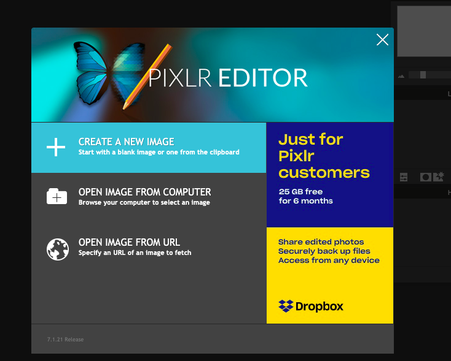
2. A box will pop up. Make sure it looks like this, then click OK:
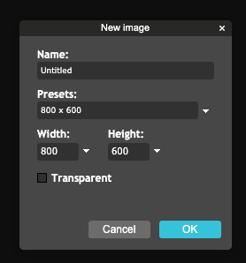
3. Now you have a blank project, ready to start! It should look something like this:
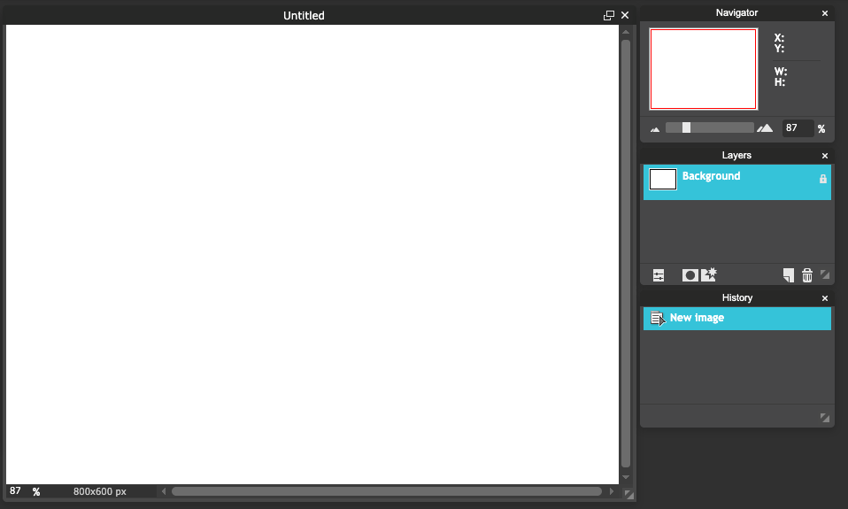
4. Next, use the text tool to add text, just like with your meme.
If you choose a font with thick letters (like Impact or Arial Bold), you'll be able to see more of the picture. You may also want to choose bold as the style.
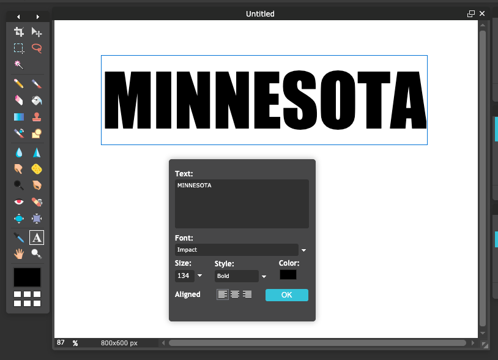
5. If you want to do more than one line of text, or use a mixture of styles or sizes, then add more than one text object. You'll see that every time you click the text tool, it adds a new layer to your project.
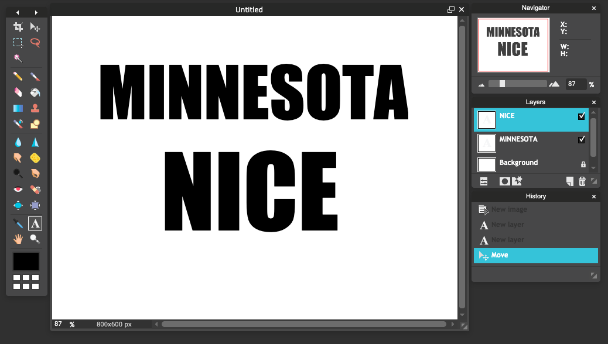
6. Next, you'll need a picture! A website like Unsplash or Pexels is a really good place to look.
When you find a good picture, save it in your IT Club folder.
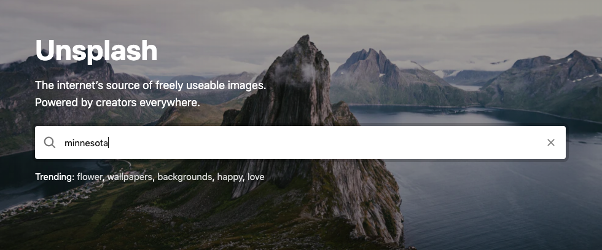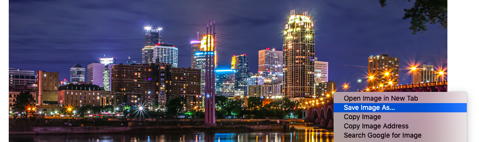
7. Back to Pixlr! To add your picture, click Layer, then Open Image as Layer. Then find your image.
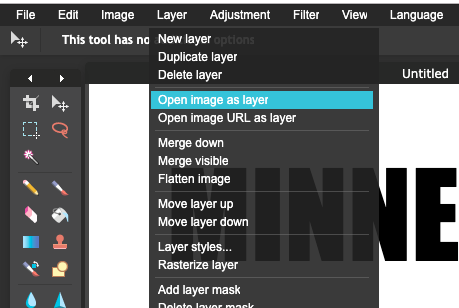
8. Your image should now be open on top of your text.
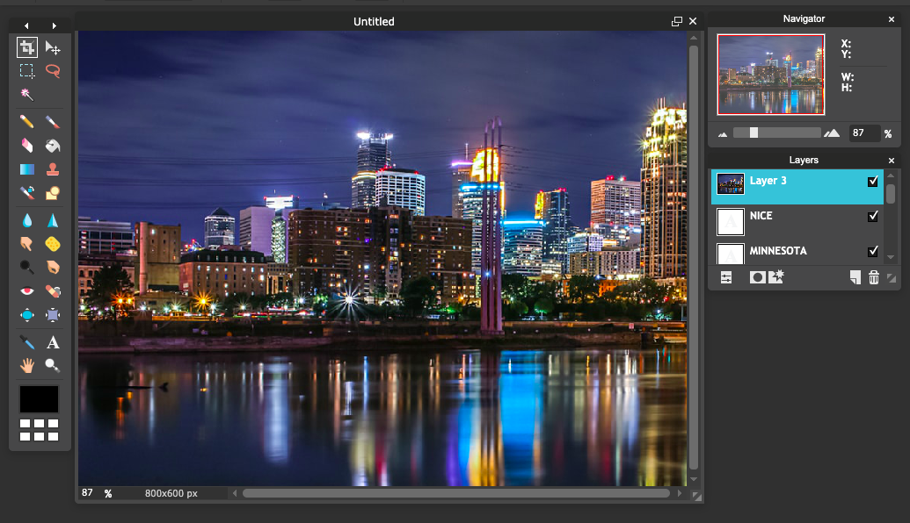
9. If you want to change the size, position, or rotation of your image, use Free Transform (just like with your pumpkin/emoji):
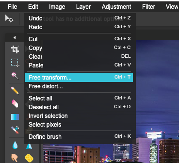
10. Next, in the Layers Bar, click the Layer Styles button.
Then, for Mode, choose Lighten:
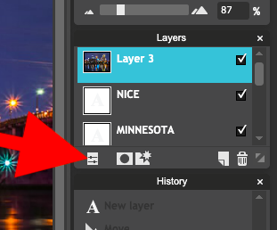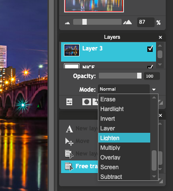
11. You should now see the picture inside the outline of the letters, like this.
If you want to adjust things, you can still use Free Transform on your image or use the text tool to change the text's size or style. Just make sure you click the layer you want to work with!
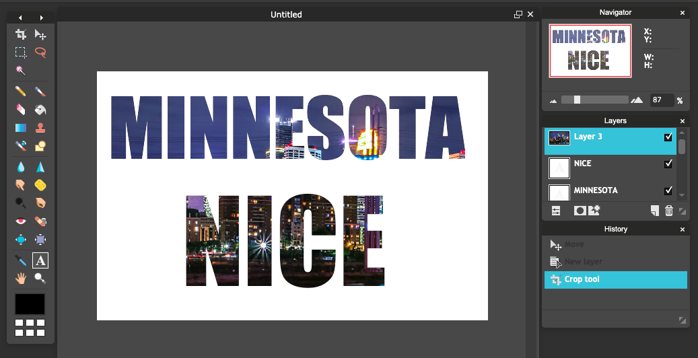
12. Finally: if you want to cut off blank space around the text, use the crop tool: click on it in the toolbar, then click and drag on your project to choose the section you want to keep.
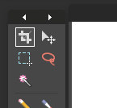
Click anywhere outside your image, and you'll see this box. Click Yes if you like your smaller image or No to try again.
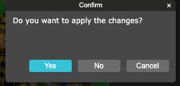
And you're done! Way to go:
When you're done...
- Make sure your creation is saved...
- as a .PNG
- with a useful name
- in your folder for this club
- Go back and try another tutorial!